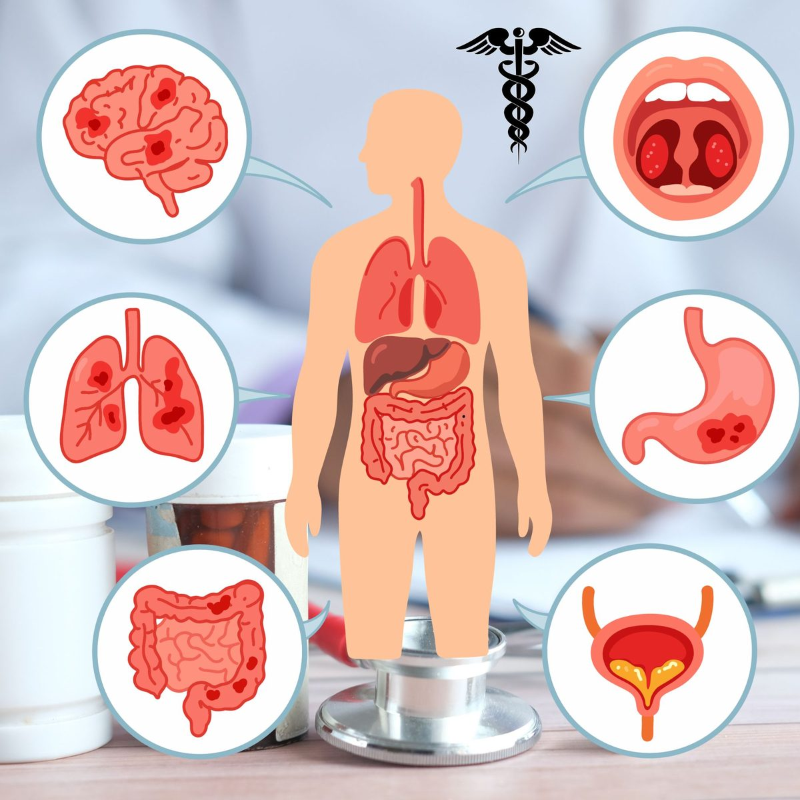

Quelles affections traite un spécialiste en médecine interne (interniste) ?
Un spécialiste en médecine interne — souvent appelé médecin consultant ou interniste — est formé pour prendre en charge des affections dans tout le corps, et non un seul organe ou système. À Maurice, les internistes reçoivent des patients à partir de 12 ans, ce qui en fait un interlocuteur adapté dès l'adolescence et jusqu'à un âge avancé. C'est ce qui rend les internistes particulièrement adaptés aux affections complexes, chroniques, ou qui ne rentrent pas nettement dans une seule catégorie. Voici un aperçu des principaux domaines couverts par un interniste.
Beaucoup d'internistes développent également, en plus de cette formation générale, une expertise supplémentaire dans un domaine particulier — par exemple la gastro-entérologie, les maladies infectieuses, ou la rhumatologie — tout en continuant à exercer la médecine interne générale. Les domaines d'intérêt particulier du Dr Joorawon Aslam sont les maladies infectieuses et les affections rhumatologiques.
Maladies infectieuses
Les internistes évaluent et traitent les infections de toutes sortes, des maladies courantes aux présentations plus persistantes ou inhabituelles, et orientent vers un usage approprié des antibiotiques. C'est l'un des domaines d'intérêt particulier du Dr Joorawon Aslam, approfondi par son rôle de responsable du contrôle des infections et de la gestion des antibiotiques au niveau hospitalier. Pour en savoir plus, lisez pourquoi la résistance aux antibiotiques est un problème croissant.
Douleurs articulaires et affections rhumatologiques
Les douleurs, gonflements et raideurs articulaires peuvent être liés à l'usure ou à une affection auto-immune ou inflammatoire sous-jacente — et faire la distinction entre les deux oriente tout le plan de traitement. Les internistes évaluent la goutte, les arthrites inflammatoires et d'autres affections rhumatologiques. Voir douleur articulaire liée à l'usure ou d'origine auto-immune et l'ostéoporose chez la femme pour en savoir plus.
Diabète et troubles métaboliques
Diagnostiquer le diabète, ajuster le traitement au fil du temps, et dépister les complications avant qu'elles ne causent des symptômes fait partie intégrante de la médecine interne. Découvrez les premiers signes d'alerte du diabète.
Tension artérielle et risque cardiovasculaire
L'hypertension est prise en charge par une combinaison de conseils sur le mode de vie et, si nécessaire, de médicaments, dans le but de réduire le risque cardiovasculaire à long terme. Voir si des changements de mode de vie peuvent faire baisser la tension artérielle.
Asthme et maladies respiratoires
Les affections respiratoires chroniques, y compris l'asthme, sont réévaluées pour contrôler les facteurs déclenchants et assurer une prise en charge à long terme, ce qui compte particulièrement sous un climat tropical. Plus de détails dans la gestion de l'asthme sous un climat tropical.
Troubles neurologiques
Les internistes évaluent les symptômes neurologiques courants et aident à déterminer lesquels nécessitent une prise en charge urgente et lesquels peuvent faire l'objet d'un bilan plus posé. Voir les signes neurologiques à ne pas négliger.
Affections digestives et gastro-intestinales
Les symptômes digestifs persistants sont évalués pour distinguer les causes bénignes de celles nécessitant une investigation plus poussée. Lisez quand des symptômes digestifs persistants nécessitent une évaluation médicale.
Consultations générales et second avis
Au-delà d'affections spécifiques, les internistes sont également un bon choix pour des bilans complets, des seconds avis, et la coordination des soins lorsqu'une personne gère plusieurs pathologies à la fois — par exemple, le diabète associé à des douleurs articulaires. Cette vision globale du patient permet souvent de révéler un lien entre des symptômes qui semblaient au départ sans rapport.
Si vous n'êtes pas sûr que votre préoccupation corresponde à l'un de ces domaines, il est tout à fait légitime de poser la question directement avant de prendre rendez-vous.
Une question sur vos propres symptômes ? Contactez-nous directement.
Écrire sur WhatsAppCet article fournit des informations générales sur la santé et ne remplace pas une consultation médicale. En cas d'urgence médicale, appelez le SAMU (114) ou rendez-vous à l'hôpital le plus proche.